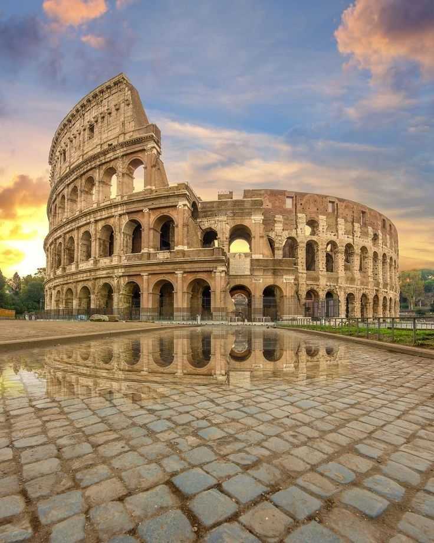

The Roman Empire
The Roman Empire was one of the largest, longest-lasting, and most influential civilizations in world history. It officially began in 27 BC, when Octavian received the title Augustus from the Roman Senate, ending the Roman Republic and becoming Rome's first emperor. Over the next five centuries, the empire expanded across Europe, North Africa, and Western Asia, governing millions of people from diverse cultures, languages, and religions.
Building upon the foundations established during the Republic, the Roman Empire created a vast political system supported by professional armies, efficient administration, extensive road networks, monumental architecture, and a thriving economy. Roman influence spread through trade, law, engineering, literature, and military organization, leaving a legacy that continues to shape the modern world.
At its greatest territorial extent under Emperor Trajan in AD 117, the empire stretched from Britain in the northwest to Mesopotamia in the east, and from the Rhine and Danube frontiers to the deserts of North Africa. This enormous territory united people from many cultures under Roman rule while encouraging commerce, communication, and cultural exchange throughout the Mediterranean region.
The Rise of the Roman Empire
The Roman Empire emerged from decades of political conflict and civil war that marked the final years of the Republic. Following the assassination of Julius Caesar in 44 BC, rival leaders competed for control of Rome. Caesar's adopted heir, Octavian, eventually defeated his opponents, including Mark Antony and Cleopatra VII of Egypt, at the Battle of Actium in 31 BC.
In 27 BC, the Senate granted Octavian the honorary title Augustus, meaning "the revered one." Although republican institutions such as the Senate continued to exist, Augustus held supreme authority over the military, finances, and provincial administration. Historians traditionally consider this moment the beginning of the Roman Empire.
Augustus carefully presented himself not as a king but as the "First Citizen" (Princeps). His leadership restored political stability after years of conflict and established an imperial system that endured for centuries.

Figure 1. Augustus, First Emperor of Rome
Suggested Image:
Statue of Augustus of Prima Porta.
Search:
Augustus Prima Porta Wikimedia Commons
Augustus and the Beginning of a New Era
Augustus ruled from 27 BC to AD 14 and transformed Rome from a republic divided by civil war into a stable empire. He reorganized the army into a permanent professional force, improved tax collection, strengthened provincial administration, and launched extensive building projects throughout Rome.
One of Augustus' most famous achievements was establishing a long period of peace and prosperity known as the Pax Romana, or "Roman Peace." Although wars continued along the empire's frontiers, the Mediterranean experienced remarkable internal stability that encouraged trade, economic growth, and cultural development.
Augustus famously declared that he had "found Rome a city of brick and left it a city of marble," highlighting the many temples, monuments, forums, and public buildings constructed during his reign.
Key Achievements of Augustus
- Established the Roman Empire.
- Created a professional standing army.
- Improved taxation and government administration.
- Expanded roads and public infrastructure.
- Began the Pax Romana.
- Encouraged literature, architecture, and the arts.
Government and Administration
Managing such a vast empire required an efficient administrative system. The emperor served as the supreme political and military leader, while governors administered the provinces on Rome's behalf. Local communities often retained their own traditions and institutions, provided they remained loyal to Rome and paid taxes.
The empire depended upon thousands of officials responsible for collecting taxes, maintaining public order, supervising construction projects, administering justice, and ensuring communication between distant provinces and the capital.
Responsibilities of the Emperor
- Commander of the army
- Head of government
- Chief lawmaker
- Foreign policy
- Religious leadership
- Provincial oversight
Provincial Administration
- Governors administered provinces.
- Taxes funded the empire.
- Roads connected major cities.
- Roman law maintained order.
- Military units defended frontiers.
- Local officials assisted governors.
The Pax Romana
One of the defining periods of the Roman Empire was the Pax Romana, meaning "Roman Peace." Lasting for approximately two centuries, from 27 BC to AD 180, this era began under Augustus and continued through the reign of Emperor Marcus Aurelius. Although Rome continued to defend its frontiers and conduct military campaigns, much of the empire experienced remarkable internal peace, political stability, and economic prosperity.
The Pax Romana encouraged trade, population growth, urban development, and cultural exchange. Merchants travelled safely across Roman roads and sea routes, carrying goods such as grain, olive oil, wine, silk, spices, glassware, and precious metals. Cities flourished as centres of commerce, education, and government, while monumental construction projects transformed the appearance of the empire.
This period also witnessed significant advances in literature, engineering, architecture, medicine, and law. Many of the public buildings and monuments that survive today—including amphitheatres, aqueducts, bridges, and temples—were either built or expanded during the Pax Romana.
Highlights of the Pax Romana
- Long period of political stability.
- Expansion of trade throughout the Mediterranean.
- Construction of roads, aqueducts, and public buildings.
- Growth of cities and commerce.
- Development of Roman law and administration.
- Flourishing of literature, art, and architecture.

Figure 2. Roman Roads
Suggested Image:
A preserved Roman road demonstrating Roman engineering.
Search:
Ancient Roman road Wikimedia Commons
Trade and the Roman Economy
The Roman Empire possessed one of the largest economies of the ancient world. Trade connected provinces across Europe, North Africa, and Asia, allowing goods, people, and ideas to move efficiently throughout the empire. The Mediterranean Sea became known as Mare Nostrum, meaning "Our Sea," because Roman naval power made maritime trade relatively secure.
Merchants transported agricultural products, luxury goods, metals, pottery, marble, textiles, spices, perfumes, and exotic animals. Rome imported silk from China through intermediary traders, spices from India, papyrus from Egypt, and valuable metals from Spain and Britain.
Roman coins were widely accepted throughout the empire, making commerce easier and encouraging economic growth. Ports, warehouses, roads, and bridges formed an extensive infrastructure that supported both trade and military movement.
Major Imports
- Silk
- Spices
- Ivory
- Papyrus
- Precious stones
- Perfumes
Major Exports
- Wine
- Olive oil
- Glassware
- Pottery
- Metal products
- Weapons

Figure 3. A Roman Port
Suggested Image:
Reconstruction or archaeological remains of Portus or Ostia.
Search:
Portus ancient Rome Wikimedia Commons
Engineering and Architecture
Roman engineers transformed the ancient world through innovative construction techniques and practical design. Their buildings combined strength, durability, and beauty, many surviving for nearly two thousand years. The use of Roman concrete, arches, vaults, and domes enabled architects to construct larger and more complex structures than many earlier civilizations.
Public buildings reflected the power and prestige of the empire. Amphitheatres hosted entertainment, baths promoted hygiene and social interaction, aqueducts supplied fresh water, while bridges and roads connected distant regions. Roman engineering greatly improved daily life and strengthened imperial administration.
| Structure | Purpose |
|---|---|
| Aqueducts | Transported fresh water into cities. |
| Roads | Improved travel, trade, and military movement. |
| Bridges | Connected settlements across rivers. |
| Amphitheatres | Hosted gladiatorial games and public events. |
| Baths | Provided public bathing and social spaces. |
| Forums | Served as political, commercial, and religious centres. |

Figure 4. The Pantheon
Suggested Image:
Exterior photograph of the Pantheon in Rome.
Search:
Pantheon Rome Wikimedia Commons

Figure 5. Roman Aqueduct
Suggested Image:
Pont du Gard or another preserved Roman aqueduct.
Search:
Pont du Gard Wikimedia Commons
The Roman Army
The Roman army was the foundation of the Empire's strength. Its discipline, organization, engineering skills, and professional training enabled Rome to defend its borders and maintain control over territories stretching across three continents. Unlike the citizen armies of the early Republic, the imperial army consisted largely of long-serving professional soldiers who dedicated many years of their lives to military service.
The principal fighting force was the Roman legion, normally composed of around 5,000 heavily armed infantry soldiers. Supporting the legions were auxiliary units recruited from throughout the Empire. These auxiliaries supplied cavalry, archers, engineers, and other specialist troops while introducing valuable local military experience.
Roman soldiers were responsible for much more than fighting battles. They built roads, bridges, forts, defensive walls, aqueducts, and military camps. Many of these structures remained in use long after the Empire had disappeared.
Standard Equipment
- Gladius (short sword)
- Pilum (throwing spear)
- Scutum (shield)
- Helmet
- Body armour
- Military sandals (Caligae)
Military Duties
- Defending frontiers
- Building roads
- Constructing forts
- Protecting trade routes
- Maintaining order
- Expanding the Empire

Figure 6. Roman Legionaries
Suggested Image:
Historical reconstruction of Roman legionaries in full equipment.
Search:
Roman legion reenactment Wikimedia Commons
Famous Roman Emperors
Throughout its history, the Roman Empire was ruled by emperors whose leadership greatly influenced its development. Some expanded the Empire, others strengthened its administration, while a few guided Rome through periods of crisis and transformation.
| Emperor | Reign | Historical Significance |
|---|---|---|
| Augustus | 27 BC – AD 14 | First Roman Emperor; established the Empire and began the Pax Romana. |
| Trajan | AD 98 – 117 | Expanded the Empire to its greatest territorial extent. |
| Hadrian | AD 117 – 138 | Strengthened the frontiers and built Hadrian's Wall in Britain. |
| Marcus Aurelius | AD 161 – 180 | Known as the "Philosopher Emperor" and author of Meditations. |
| Constantine I | AD 306 – 337 | Legalized Christianity and founded Constantinople. |

Figure 7. Hadrian's Wall
Suggested Image:
Photograph of Hadrian's Wall in northern England.
Search:
Hadrian's Wall Wikimedia Commons
Christianity in the Roman Empire
Christianity emerged during the early Roman Empire in the province of Judea. At first, Christians formed a small religious community and were sometimes persecuted because they refused to participate in certain traditional Roman religious practices. Over time, however, Christianity spread throughout the Empire despite periods of persecution.
A major turning point occurred under Emperor Constantine I. In AD 313, Constantine and Licinius issued the Edict of Milan, granting religious tolerance and allowing Christians to worship openly. Constantine later supported the construction of churches and played an important role in the development of Christianity within the Empire.
By the end of the fourth century, Christianity had become the Empire's official religion under Emperor Theodosius I. The growth of Christianity would continue to influence European history long after the fall of the Western Roman Empire.

Figure 8. Emperor Constantine the Great
Suggested Image:
Bust or statue of Constantine the Great.
Search:
Constantine the Great statue Wikimedia Commons
The Crisis of the Third Century
Between AD 235 and AD 284, the Roman Empire experienced one of the most difficult periods in its history. Known as the Crisis of the Third Century, this era was marked by political instability, frequent changes of emperor, economic difficulties, civil wars, foreign invasions, and outbreaks of disease.
More than twenty emperors ruled during this fifty-year period, many coming to power through military support and losing power through assassination or rebellion. Inflation weakened the economy, trade declined in many regions, and frontier defenses came under increasing pressure from external enemies.
Despite these challenges, the Empire survived through military reforms and administrative changes introduced by later emperors, particularly Diocletian, whose reforms restored greater stability.
Historical Importance
The Crisis of the Third Century demonstrated how difficult it had become to govern such a vast empire. The reforms that followed reshaped Roman administration and prepared the Empire for its next stage of development.
The Division and Decline of the Roman Empire
By the late third century AD, the Roman Empire had become too vast for a single ruler to govern effectively. Its enormous territory stretched thousands of kilometres across Europe, North Africa, and Western Asia, making communication, defence, and administration increasingly difficult. Frequent invasions, civil wars, economic problems, and political instability further weakened imperial authority.
In AD 285, Emperor Diocletian reorganized the Empire by dividing its administration between eastern and western regions. Although intended to improve efficiency, this marked the beginning of a permanent political separation. Each half developed its own government while continuing to cooperate in defending the Empire.
A few decades later, Emperor Constantine the Great founded a new capital at Constantinople (modern-day Istanbul) in AD 330. Located on the Bosporus Strait, the city became the political and economic centre of the Eastern Roman Empire.
Western Roman Empire
- Capital: Rome (later Ravenna)
- Faced repeated invasions
- Political instability
- Economic decline
- Ended in AD 476
Eastern Roman Empire
- Capital: Constantinople
- Stronger economy
- Continued Roman traditions
- Known later as the Byzantine Empire
- Survived until AD 1453

Figure 9. Constantinople
Suggested Image:
Historical reconstruction or aerial illustration of ancient Constantinople.
Search:
Constantinople reconstruction Wikimedia Commons
The Fall of the Western Roman Empire
During the fifth century AD, the Western Roman Empire faced increasing pressure from migrating peoples and invading groups, including the Visigoths, Vandals, and Ostrogoths. Political instability, economic challenges, and military difficulties reduced the Empire's ability to defend its frontiers effectively.
A symbolic milestone occurred in AD 476, when the Germanic leader Odoacer deposed the young emperor Romulus Augustulus. Historians traditionally regard this event as marking the end of the Western Roman Empire, although Roman institutions and culture continued to influence Europe for centuries afterward.
The Eastern Roman Empire, centred in Constantinople, continued to preserve Roman law, administration, and culture for nearly one thousand more years before its capital fell to the Ottoman Empire in AD 1453.
Historical Significance
The fall of the Western Roman Empire did not mark the end of Roman civilization. Roman law, language, engineering, architecture, religion, and political ideas continued to shape medieval Europe and remain influential throughout the modern world.
Timeline of the Roman Empire
| Year | Historical Event |
|---|---|
| 27 BC | Augustus becomes the first Roman Emperor. |
| AD 43 | Roman conquest of Britain begins. |
| AD 80 | The Colosseum is completed. |
| AD 98–117 | Reign of Emperor Trajan; Empire reaches its greatest extent. |
| AD 117–138 | Hadrian strengthens the Empire's frontiers. |
| AD 161–180 | Marcus Aurelius rules during the final years of the Pax Romana. |
| AD 235–284 | Crisis of the Third Century. |
| AD 313 | Edict of Milan grants religious tolerance. |
| AD 330 | Constantinople becomes the new imperial capital. |
| AD 395 | The Empire is permanently divided into East and West. |
| AD 476 | End of the Western Roman Empire. |
| AD 1453 | Fall of Constantinople and the end of the Byzantine Empire. |
The Legacy of the Roman Empire
The Roman Empire remains one of history's most influential civilizations. Its achievements in government, engineering, architecture, military organization, law, literature, and urban planning helped shape the development of Europe and many other parts of the world. Roman ideas continue to influence modern legal systems, political institutions, languages, and public infrastructure.
Monuments such as the Colosseum, the Pantheon, Hadrian's Wall, and countless roads, bridges, and aqueducts stand as lasting reminders of Roman engineering and architectural skill. Archaeological discoveries continue to provide new insights into Roman society, allowing historians to better understand the daily lives of millions of people who lived within the Empire.
Law
Roman legal principles continue to influence modern civil law systems.
Engineering
Roads, bridges, aqueducts, and concrete transformed construction.
Language
Latin became the foundation of the Romance languages.
Government
Roman political ideas influenced later constitutional systems.
Historical Gallery

Colosseum
Search: Colosseum Rome Wikimedia Commons
Pantheon
Search: Pantheon Rome Wikimedia Commons
Hadrian's Wall
Search: Hadrian's Wall Wikimedia Commons
Constantinople
Search: Constantinople reconstruction Wikimedia Commons
Conclusion
From a small settlement on the banks of the River Tiber, Rome grew into one of the greatest empires the world has ever known. Its history spans legendary kings, a powerful republic, centuries of imperial rule, and a legacy that continues to influence modern civilization. The story of Rome is not only the history of an ancient state but also the story of ideas, innovations, and institutions that have shaped the modern world.
← Return to Home Learn About the Romans